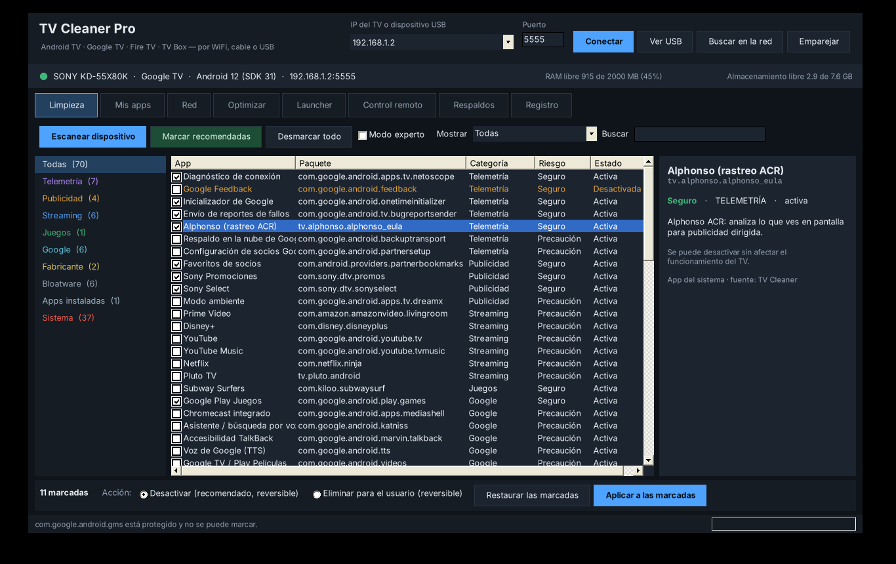
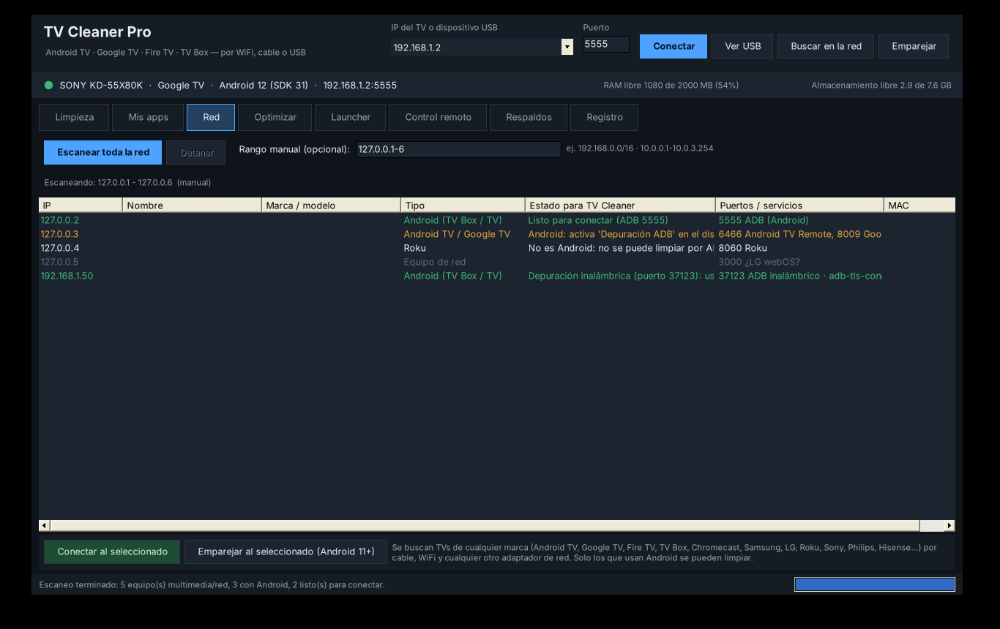
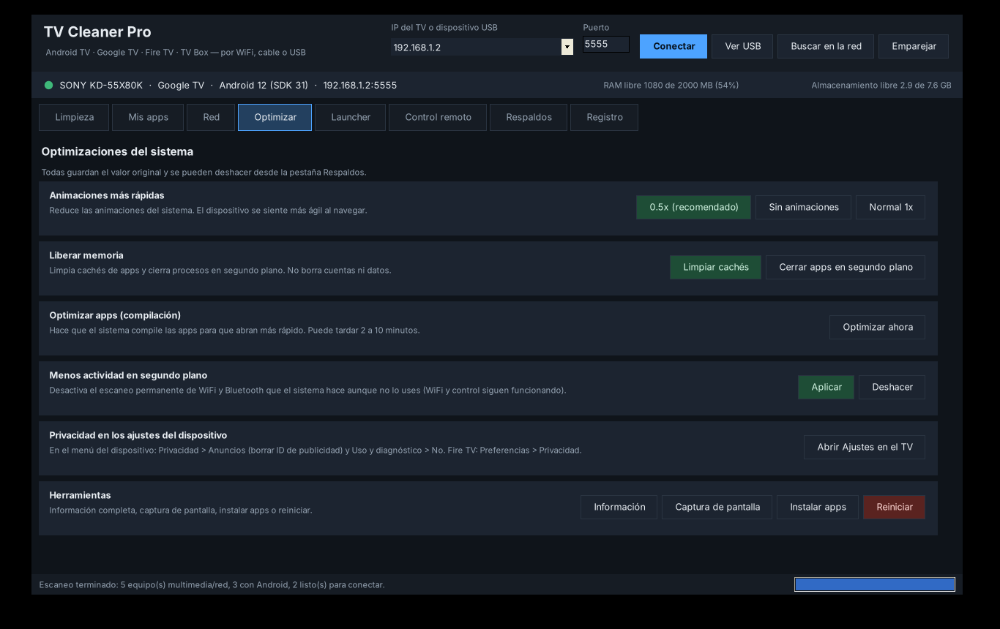
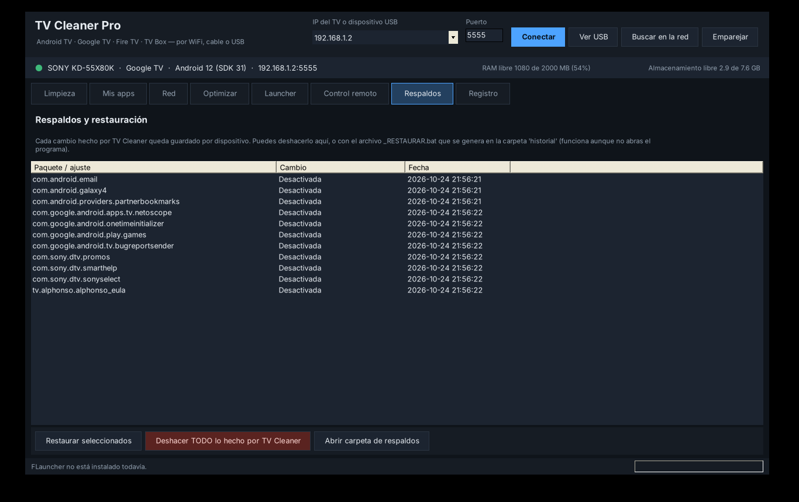

🛡
Quita telemetría y publicidad
Detecta el rastreo, los reportes de uso y las apps que muestran anuncios, y te deja elegir qué quitar.
Quita publicidad, telemetría y apps que no usas, instala tus propias aplicaciones y optimiza Android TV, Google TV, Fire TV, NVIDIA Shield y cajas TV Box, por WiFi, cable o USB. Todo se puede deshacer.
Una sola ventana para limpiar el TV, instalar apps y revisar lo que pasa dentro.
Detecta el rastreo, los reportes de uso y las apps que muestran anuncios, y te deja elegir qué quitar.
Apps preinstaladas fuera de tu uso. Desactivar es lo más seguro y se revierte con un clic.
APK, APK divididos, .apks, .xapk y .apkm, con datos OBB. Los errores se explican en español.
Escanea toda la red local e identifica televisores de muchas marcas, incluidos Android TV, Google TV y Fire TV.
Animaciones más rápidas, limpieza de caché, optimización de apps y apagado de escaneos WiFi y Bluetooth en segundo plano.
Elige la pantalla de inicio que prefieras. El programa verifica que el cambio funcione antes de darlo por bueno.
Usa las flechas, OK, volver, inicio y escribe texto desde el teclado de tu computadora.
Lee el logcat de una app, toma capturas, extrae su APK e identifica el modelo y la versión del TV.
Pensado para no dañar el sistema del TV. Cada cambio queda registrado y se puede revertir.
Una app desactivada deja de ejecutarse y no se borra. Se reactiva con pm enable.
Se quita solo para tu usuario con uninstall -k --user 0 y vuelve con install-existing.
Las apps que instalaste guardan su APK en la PC antes de desinstalarse.
El launcher, el teclado y los servicios de accesibilidad activos nunca se tocan. En Fire TV, tampoco la Appstore.
Si el TV deja de responder o pierde la pantalla de inicio, el programa reactiva los launchers.
Cada TV tiene su historial y un archivo _RESTAURAR.bat para deshacer todo sin abrir el programa.
No necesitas saber programar. Solo activar la depuración en el TV y tener ambos equipos en la misma red.
Toca 7 veces el número de compilación en Acerca de y activa la Depuración ADB.
Escribe la IP del TV o pulsa Buscar en la red y elige tu equipo.
Pulsa Conectar y acepta el aviso de depuración que aparece en el TV.
Marca lo que quieras quitar y pulsa Aplicar. Todo queda en el historial.
Una interfaz oscura, con pestañas claras y mensajes en español.




Un solo archivo para Windows 10 y 11. No necesitas instalar nada más.
⬇ Descargar TV_Cleaner_Pro.exe